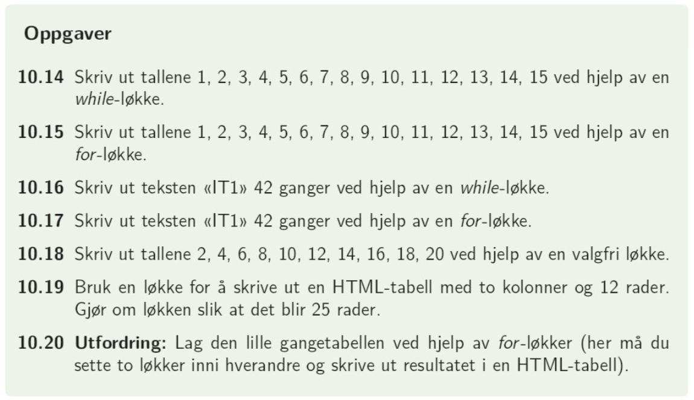

Oppgaver av typen dere så i forrige time kan la seg løse uten å bruke løkker, men det blir veldig tungvint og upraktisk:
Oppgaven Skriv kode som gjentar teksten ‘Jeg synes det er unødvendig å skrive det samme 10 ganger’ ti ganger på siden kan løses enklest ved å skrive koden
$tekst = 'Jeg synes det er unødvendig å skrive det samme 10 ganger';
echo $tekst $tekst $tekst $tekst $tekst $tekst $tekst $tekst $tekst $tekst;
Oppgaven Skriv tregangeren (3 – 6 – 9 osv) til siden ved hjelp av aritmetiske operatorer kan løses enklest ved å skrive ut
echo (1*3).' '.(2*3).' '.(3*3).' '.(4*3).' '.(5*3).' '.(6*3).' '.(7*3).' '.(8*3).' '.(9*3).' '.(10*3).';
Dette er unødvendig mye å skrive, og vi ser at mye kode repeterer seg. Det burde kunne løses enklere. Det er da løkker kommer inn i bildet.
En løkke er en metode for å gjenta kode. Vi har to hovedtyper av løkker: forløkker og whileløkker. Å lage en løkke går ut å si at en del av kode skal gjentas, enten et visst antall ganger (for-løkker) eller så lenge en påstand er sann (while-løkker). De har derfor noe forskjellig bruksområde. I oppgavene dere fikk i forrige time kan a) b) og c) løses både med forløkker og whileløkker mens oppgave d) bare kan løses med whileløkker.
--> En for-løkke bruker vi når vi vet hvor mange ganger en kode skal kjøres: f.eks. når vi skal lage gangetabeller, fylle en tabell med 10 rader eller liknende.
For-løkker i php har strukturen
for($teller = startverdi; $teller <= sluttverdi; $teller øker){
//kode som skal gjentas
}
Telleren kaller vi ofte i eller j, og for å øke den kan vi skrive i++ (teller øker med 1) i+=2 (teller øker med 2) osv.
Eksempel 1: skriv ut tallene fra 1 til 10 med en løkke
for($i=1; $i<=10; $i++){
echo "$i < br >";
}
Eksempel 2: skriv ut partallene fra 2 til 20 med en løkke
Her kan vi enten la telleren øke med 2 (i+=2) eller vi kan legge en if-setning inne i løkka:
for($i=2; $i<=20; $i+=2){
echo "$i ";
}
for($i=2; $i<=20; $i++){
if($i%2==0){
echo "$i ";
}
}
Fra boka: Oppgave 10.15, 10.17, 10.18 (med for-løkke), 10.19
 En while-løkke bruker vi når kode skal gjentas så lenge en betingelse er oppfylt, dvs. i stedet for å lage et uvisst antall if-else-setninger.
While-løkker har strukturen
while(påstand er sann){
// kode som skal gjentas
// endring av betingelse for påstanden
}
Påstanden kan for eksempel være $i<=10, slik som i forløkkeeksempelet over. I en whileløkke endres ikke betingelsen i () slik som i forløkker, men mellom {} slik at betingelsen kan bli usann en gang og bryter ut av løkken.
Eksempel 1: skriv ut tallene fra 1 til 10 med en løkke
$i = 1;
while($i <= 10){
echo "$i ";
$i++;
}
Eksempel 2: skriv ut nye tilfeldige tall mellom 1 og 10 så lenge det tilfeldige tallet ikke er et partall
$tall = rand(1, 10);
while ($tall%2 != 0){
echo "$tall ";
$tall = rand(1, 10);
}
Faren med whileløkker: Hvis vi glemmer å endre betingelsen for whileløkken, eller har konstruert påstanden slik at den alltid er sann, kan vi få en uendelig whileløkke: kode som gjentas i det uendelige. Da må dere bare avslutte nettleser, fikse problemet og prøve igjen.
Et eksempel på dette er kodene under. Hva går galt her?
$tall = 2;
while ($tall%2==0){
echo ($tall);
}
$tall = 2;
while ($tall%2=0){
echo ($tall);
$tall = rand(1, 50);
}
$i = 1;
while ($i >= 0){
echo ($i);
$i++;
}
Følgende oppgaver kan løses uten løkker, men det blir veldig tungvint
Skriv kode som gjentar teksten ‘Jeg synes det er unødvendig å skrive det samme 10 ganger’ ti ganger på siden.
for($i=1; $i<=10; $i++){
echo "Jeg synes det er unødvendig å skrive det samme 10 ganger< br >";
}
Skriv tregangeren (3 – 6 – 9 osv) til siden ved hjelp av aritmetiske operatorer.
for($i=1; $i<=10; $i++){
echo ($i*3)." ";
}
Presenter den lille gangetabellen (opp til 10*10) i tabellformat på nettsiden ved hjelp av aritmetiske operasjoner. Alt skal skrives mellom < ?php og ? >
Denne går vi gjennom etter oppgavepause.
Skriv kode som oppfyller følgende pseudokode:
generer et tilfeldig tall mellom 0 og 30 og skriv dette på siden;
hvis det nye tallet ikke er delelig med seks{
generer et nytt tilfeldig tall mellom 0 og 30 og skriv dette på siden;
}
hvis det nye tallet ikke er delelig med seks{
generer et nytt tilfeldig tall mellom 0 og 30 og skriv dette på siden;
}
Osv helt til tallet som blir generert er delelig med seks.
$tilfeldig = rand(0, 30);
while($tilfeldig%6!=0){
echo "$tilfeldig ";
$tilfeldig = rand(0, 30);
}
Presenter den lille gangetabellen (opp til 10*10) i tabellformat på nettsiden ved hjelp av aritmetiske operasjoner. Alt skal skrives mellom < ?php og ? >
I læreboka: Oppgave 10.14, 10.16, 10.18 (med whileløkke)